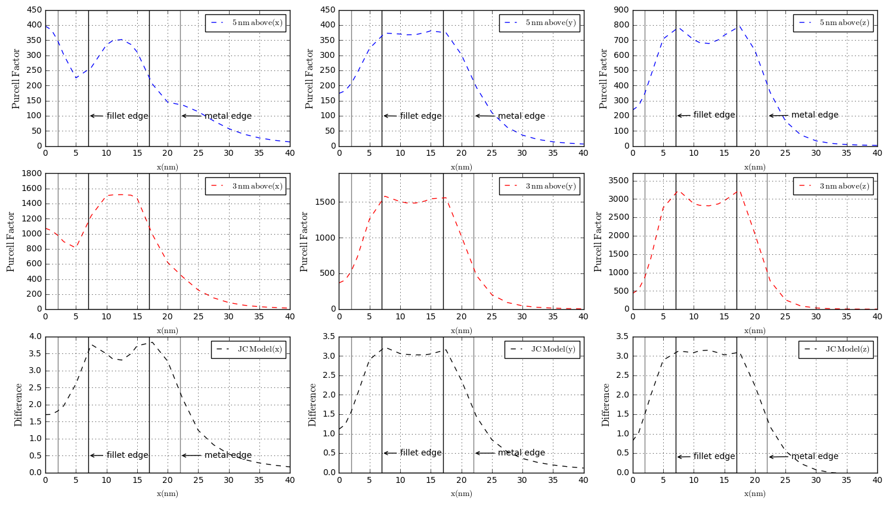

In this section, we address the general method to identify the artifacts of lifetime image for metallic step-like nanostructure.
Utilizing a single molecule as a sensitive scanning probe, we demostrate the nanoscale fluorescence lifetime imaging of the gold nanorod dimer by calculating Purcell factor, which reveals the information on the local density of optical states. Also, the numerical results show that the spatial resolution of lifetime imaging differs significantly from orientation of emitting molecule and we address the general method to distinguish the artifacts from fluorescence lifetime imaging compared to the real morphology of gold nanorod dimer. Furthermore, the spectral dependence and size dependence of the Purcell effect for a single molecule interacting with dimer of gold nanorods deposited on the glass is investigated.
The lifetime of an excited molecule located near a metallic nanoparticle has recently been the subject of many experimental and theoretical investigations ranging from nanoplasmonics and optoelectronics to biomedical imaging. Due to the pioneering work of Purcell it has been known that the spontaneous emittion of an emitting molecule can be tailored by its environment. However, the spontaneous emission rate is governed by the local density of optical states (LDOS), which is properly defined as the imaginary part of the Green's function `Im{G}`. The LDOS includes all channels offered by the environment, i,e, radiative decay into the far field, nonradiative decay into the confined nanostructure, and quenching. Since in various applications nanophotonic structures are empolyed, it should be of interest to explore .
The lifetime of excited molecule is determined by taking the the inverse of total decay rate of energy dissipation. Because the Green's function is the response of the electric field due to a point source, it is possible to represent the emitting molecule by a classical dipole. The total decay rate of emitting dipole can be obtained by considering the two mechanisms. One is the radiative loss, which is calculated from the Poyting vector, and the other is the nonradiative decay, which is calculated from the Ohmic losses inside the metallic nanostructure and the intrinsic property independent of nanostructure-dipole distance, respectively.
Let's denote the total decay rate of the emitting dipole in free space as `gamma^o= gamma_(r)^o + gamma_(nr)^o`, where ` gamma_(r)^o` and `gamma_(nr)^o` are the radiative and intrinsic nonradiative decay rates of emitting dipole. The intrinsic quantum yield of single dipole is defined as `eta^o = gamma_(r)^o`/(`gamma_(r)^o +gamma_(nr)^o`). While the presence of the nanostructure introduces the an additional nonradiative rate `gamma_(a)`, the quantum yield is thereby modified to `eta = gamma_(r)`/(`gamma_(r) +gamma_(nr)^o +gamma_(a)`). Here we assume that the dipole has high intrinsic quantum yield(`eta^o = 1`), and we obtain `eta = gamma_(r)`/(`gamma_(r) +gamma_(a)`). As a result, `gamma_(a)` become the only nonradiative decay channel, that is, the Ohmic loss in the metal. A shorter distance between the molecule and the metallic nanostructure can always cause the stronger absorption and dissaption by metallic nanostructure, even though it also induces stronger local electric field in the vicinity of a metallic nanostructure. The energy transfered rate to metallic nanoparticle(`gamma_(a)`) can be deduced from the power `P_(a)` which is radiated by the dipole and absorbed in the metallic nanoparticle.
Acorrding to Time-Harmonic Poyting Theorem, the power radiated by the dipole and absorbed inside the metallic nanoparticle with frequency-dependent dielectric constant `epsilon(omega)` can be calculated as
where `omega` is the angular frequency of classical emitting dipole and `E` is the electrostatic dipole field over the volume of metallic nanostructures. On the other hand, the radiative decay rate can be derived from the scattered power `P_(r)`, which depends on the geometrical shape and material of nanostructures. The result for the rate at which energy is radiated is obtained by evaluating the Poyting vector and integrating the energy flux through the closed surface that bounds the volume containing nanostructure-dipole system. The Purcell effect is the enhancement of a fluorescent molecule's spontaneous emission rate by its environment, and Purcell factor(`F`) represent the enhancement which is the ratio of the total decay rate when the metallic nanostructure is present to that in free space. Applying the general formulas for the radiative and nonradiative decay rates of transferd energy above, we can deduce that the Purcell factor is given by: `F =gamma`/`gamma_(0)``=(P_(a)+P_(r))`/`P_(0)`.
Model of Au nanorod dimer
1.Spectrum of emitting dipole and palnwave(x-orientation).
2.We discover that the x-orientation of emitting dipole has the artifact and use fractioncal change to identify it.
.
./em>


I'd love your feedback!
Swing by for a cup of , or leave me a note: